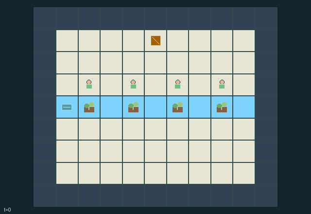

GI087 · Spillway Orchard

Before 96 steps, keep enough of the commons alive for every role to bank at least four fruit; individuals also earn private harvest and bank rewards.
Identity and original contract
4 independently actionable roles; 11 discrete commands per role; 73 native observation columns per role; original horizon 96 steps. Declared per-step reward range: -4.0 to 10.0. Observation regime: partially_observable.
Source SHA-256: 6f14228953eee9e5140b00fdd3f8fd2cba536ead7a7b6fa2d324534a786fab31
The objective, rewards, population, map and horizon remain original. A preview is not a success claim.
Objective and gameplay
Before 96 steps, keep enough of the commons alive for every role to bank at least four fruit; individuals also earn private harvest and bank rewards.
Harvest consumes local water and emits silt that advects downstream, while cleaning, seed investment, headwater releases and temporary exclusion change other roles future harvest masks and payoffs.
- Four beds share one west-to-east stream. Agents can move between them; a bed is worked from distance at most one.
- Harvest gives one fruit, consumes one local water and adds two silt. A carried bag holds at most four.
- Each bed sends one water downstream when it has at least two; up to one silt travels with that water, one reach per turn.
- Every fourth turn silt settles by one and a watered, clean living or seeded bed can regrow one fruit.
- Spend one carried fruit to clean two silt, plant a seed, release two headwater units, or claim a bed for six turns.
- A claim excludes other harvesters. Conflicting local work has one winner per bed with rotating priority.
- Bank fruit near [5,1]. All four must bank four to complete; losing every living stock, seed and carried fruit causes collapse.
- Local radius-three views hide distant bags and bed conditions. Bank announcements and release bells are public.
Ending: Joint success when every banked count reaches four; otherwise irreversible collapse when total living stock plus planted seed plus carried fruit is zero.
What this game explores
Resource commons & externalities: An action changes a persistent resource or burden that another role also encounters. Compare extraction with maintenance and record the downstream resource trajectory.
These are questions supported by rule structure, not observed learning effects.
Play it: operating walkthrough
crucibles play --game gi087Keep Python running and open its printed address. Select this game, set a seed and press Create session. The game itself is always English.
Assign a role range to Host with Assign / take over, or Assign all roles. Invite a second participant with Create player invitation, then assign a disjoint subset. Every original role is available.
For every owned role choose a legal command and press Queue. Arrow keys / WASD queue a declared directional action for the current role camera when available. Space or Advance one joint step advances everyone together. Non-directional games use the selectors.
Unqueued roles use the labelled untrained uniform-legal policy. Take over or release roles before the next step without resetting. Full-state debug is privileged and permanently logged; role cameras preserve permissions. Close the session to retain logs. Server restart does not restore sessions.
Complete command reference
IDs and English labels exactly match the manifest. Availability depends on role, resources, location and phase. An available action can still have no productive effect.
0·WAIT
1·NORTH intent
2·EAST intent
3·SOUTH intent
4·WEST intent
5·HARVEST nearest adjacent bed
6·CLEAN nearest adjacent bed using one fruit
7·SOW nearest adjacent bed using one fruit
8·RELEASE headwater using one fruit
9·STAKE nearest adjacent bed for six turns using one fruit
10·BANK carried fruit at market
Roles and capability identifiers
These original role names describe capabilities, not interchangeable skins. Check each owned role's legal selector before planning handoffs.
agent_0·forager initially beside headwater bed 0
agent_1·forager initially beside bed 1
agent_2·forager initially beside bed 2
agent_3·forager initially beside downstream bed 3
Information and observation permissions
Static layout, market, release lever and bank/release announcements are public. Agents, bags and bed condition/ownership are visible only within Manhattan distance 3. Only within distance 1 may roles work a bed or use a landmark.
The GIF is full-state debug and may reveal hidden entities or private state. Train on obs[agent], not the picture, state tree or another role's private row. Field slices and visibility are in the original manifest.
Reinforcement-learning integration
import jax
from crucibles_jaxmarl import make
env = make("gi087")
key = jax.random.PRNGKey(0)
key, rk, ak, sk = jax.random.split(key, 4)
obs, state = jax.jit(env.reset)(rk)
actions = env.sample_actions(ak, state)
obs, state, rewards, dones, info = jax.jit(env.step_env)(sk, state, actions)
done = dones["__all__"]Observations are float32 vectors of width 73; actions are scalar int32; masks have 11 entries. Supply all 4 roles each transition. Masked sampling is an engineering reference, not a trained learner.
step_env retains terminal data without reset. step performs outer autoreset and keeps terminal data in info["raw_state"] and info["raw_observation"]. Use dones["__all__"] for episode boundaries; separate completion, failure and time limit in analysis.
JIT or vmap equal identities and shapes. Split independent reset, policy and transition keys. Group different shapes explicitly; do not shrink the population or horizon. Host rendering stays outside training.
Training questions and fair evaluation
Define valid completion from the objective before fitting. Preserve original rewards and also report real deliveries/services, losses, resource state, unresolved episodes and per-role returns. Animation is not a reward signal.
An action changes a persistent resource or burden that another role also encounters. Compare extraction with maintenance and record the downstream resource trajectory.
Compare memory, communication or centralized critics under matched actor information. Declare critic access; keep actor inputs role-filtered. Match partner/opponent distributions, masks, compute and checkpoint selection. Final tests never enter fitting or selection.
Independent training runs or source-pairing blocks are inferential units; episodes from one policy are not independent training replications. Save hashes, keys, versions, device, time and cost. Negative, zero, failed and indeterminate outcomes are valid. No trained checkpoint or target score is supplied.
Classification and evidence
Overlapping editorial labels are reading aids, not proof of novelty, difficulty, strategic equivalence or learning effects.
- Resource commons & externalities
- Evidence
manifest.task.interaction: Harvest consumes local water and emits silt that advects downstream, while cleaning, seed investment, headwater releases and temporary exclusion change other roles future harvest masks and payoffs.
- Evidence
scene.rules.1: Harvest gives one fruit, consumes one local water and adds two silt. A carried bag holds at most four.
- Evidence
scene.rules.2: Each bed sends one water downstream when it has at least two; up to one silt travels with that water, one reach per turn.
Source, receipts and preview limits
The world-only English GIF replays saved untrained legal actions through the original kernel. At most 25 actual endpoints include initial and terminal state; no invented interpolation. It is full-state debug, not the role observation.
Original source, observation slices, manifest and mechanism
Native receipt · Presentation receipt
Engineering passes do not establish learning. Nonzero floating differences remain recorded and undetermined; no new tolerance was introduced. Human scores remain unverified.